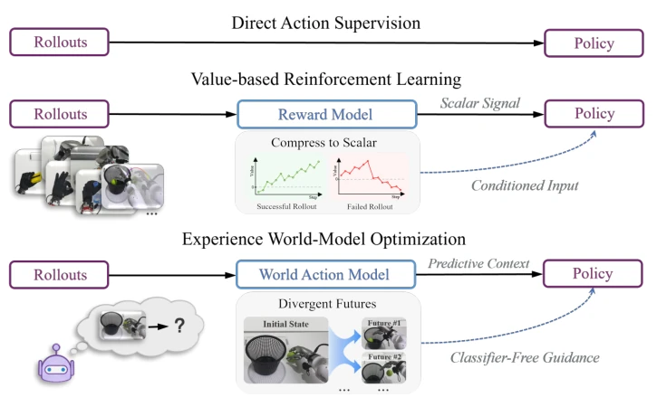
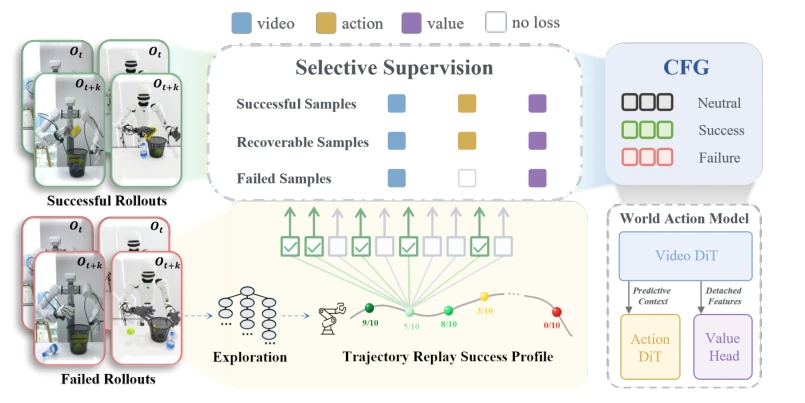
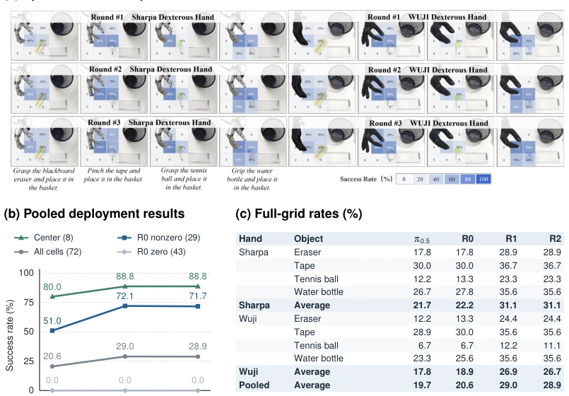
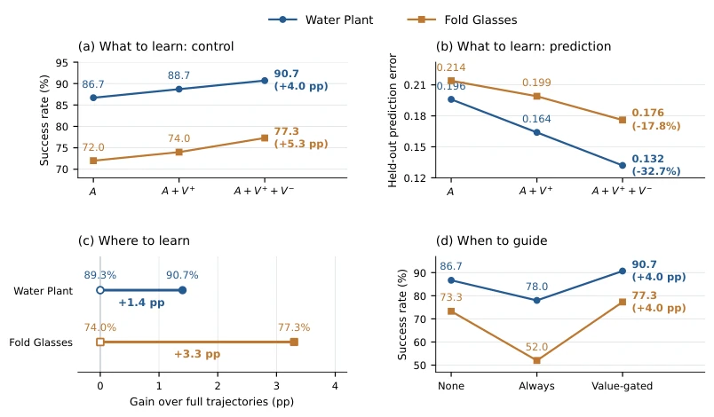

This paper opens a new avenue for WAM's post-deployment learning, moving away from rigidly pursuing action imitation or value reinforcement, and instead treating "failure" as positive samples for training the world model. The core of DEWO lies in leveraging interaction turning points to collect visual futures of both success and failure, correcting action generation through outcome-conditioned learning. While the approach is compelling and tightly couples prediction with control, there is a practical concern: precisely recovering states to locate turning points on real robots is costly; the "human inspection" mentioned in Appendix B, while honest, is not sufficiently automated. Furthermore, although the improvement in simulation is significant, whether the approximately 20% improvement in the real world is robust enough in complex tasks remains to be seen. However, it indeed demonstrates that the world model itself warrants continuous optimization during deployment, rather than merely serving as an adjunct to the action policy.
研究动机Motivation
现有 WAM 的部署后学习通常只关注行为改进，忽略了世界预测能力的退化。在灵巧操作中，微小的动作偏差会导致接触变化，使执行偏离训练分布（Ross et al., 2011; Yang et al., 2026c）。这种“耦合适应问题”意味着，如果世界模型无法准确预测新交互，动作生成也会失效。当前方法如 SFT 或 RL（Amin et al., 2026; Wagenmaker et al., 2025）主要优化行为，不要求提升预测能力。DEWO 旨在解决这一缺口：利用部署中遇到的实际交互，特别是那些导致成功或失败分叉的转折点，通过视觉经验持续优化世界模型，从而间接提升控制能力。这不仅是学习“怎么做”，更是学习“世界会怎么变”。
Existing WAM post-deployment learning typically focuses solely on behavior improvement, neglecting the degradation of world prediction capabilities. In dexterous manipulation, minor action deviations lead to contact changes, causing execution to deviate from the training distribution (Ross et al., 2011; Yang et al., 2026c). This "coupling adaptation problem" implies that if the world model cannot accurately predict new interactions, action generation will also fail. Current methods such as SFT or RL (Amin et al., 2026; Wagenmaker et al., 2025) primarily optimize behavior without requiring improvements in prediction capability. DEWO aims to address this gap: leveraging actual interactions encountered during deployment, particularly those turning points that lead to success or failure divergence, continuously optimizing the world model through visual experience, thereby indirectly enhancing control capabilities. This is not merely learning "how to do," but also learning "how the world will evolve."

Figure 1: Learning signals for post-deployment policy improvement. Direct action supervision (top) learns from action targets. Value-based reinforcement learning (middle) uses value estimates to improve the policy. DEWO (bottom) learns from observed visual futures and uses the learned success condition to guide actions.
The overall framework of DEWO comprises three core stages: data collection, model training, and inference guidance. First, interaction turning points are located via replay exploration, identifying state nodes within failure trajectories that can still recover success, collecting matched success and failure continuations. During the training phase, an outcome-conditioned strategy is adopted: success continuations supervise both visual prediction and action generation (c+), while failure continuations supervise only visual prediction (c-), enabling the model to learn the evolution dynamics of different physical consequences rather than merely imitating successful actions. The loss function L_crit explicitly distinguishes these two supervision signals. In the inference phase, a progress gating mechanism is introduced; a value head evaluates task progress, activating classifier-free guidance only when progress stagnates, combining base conditions with success conditions to predict actions. This design avoids oscillations caused by over-guidance while ensuring the model can leverage the corrected world model to generate more robust actions when encountering unseen interactions. In this manner, DEWO transforms deployment experience into continuous optimization signals for the world model, rather than merely updating policy parameters.

Figure 2: Overview of Direct Experience World-Model Optimization (DEWO). Replay explo- ration locates interaction turning points and collects successful and failed continuations from matched contexts. Their visual futures train outcome-conditioned world modeling, while successful behavior supplies action targets. At deployment, a value head monitors task progress and selectively activates classifier-free guidance using the base and success-conditioned action predictions.
On DexJoCo simulation tasks, DEWO outperforms SFT, RECAP, and DSRL on both FastWAM and FACT, with a significant average success rate improvement. Real-world experiments involve Wuji and Sharpa manipulators, 4 objects, and a 3x3 grid evaluation. After two rounds of deployment learning, the success rate of initially successful cells increased from 51.0% to 71.7%. Ablation studies indicate that introducing failure visual futures (V-) further reduces video prediction error and enhances control. Figure 4 shows that relying solely on action supervision (A) is less effective than adding visual supervision (V+ + V-), and value gating guidance outperforms constant guidance. This validates the effectiveness of optimizing the world model using failure visual experience.

Figure 3: Spatial and iterative real-world evaluation. (a) Two hands, four objects, three rounds; image labels Round #1/#2/#3 denote R0/R1/R2. (b) Pooled success for eight centers, 29 R0-nonzero cells (including centers), 43 R0-zero cells, and all 72 cells. Groups stay fixed across rounds, with ten trials per cell (720 per round). (c) Full-grid rates by object and hand; π0.5 is a separate reference.

Figure 4: Component analysis on Water Plant and Fold Glasses. A: successful-action supervision; V +/V −: successful/failed visual futures. (a,b) Task success and validation video loss (lower is better), with changes from A. Failed actions are not imitation targets. (c) Full trajectories (open) versus critical experience (filled), matching data sizes and training budgets; labels show success. (d) No guidance, continuous guidance, and value-gated guidance; gains are relative to no guidance in percentage points (pp).